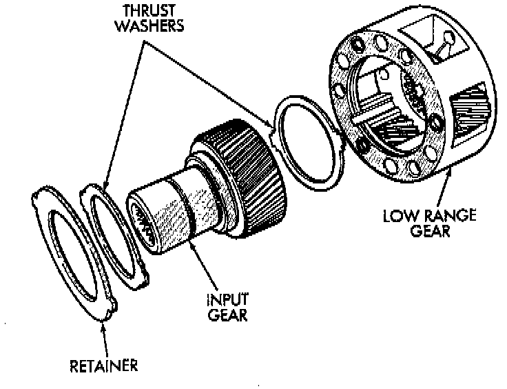
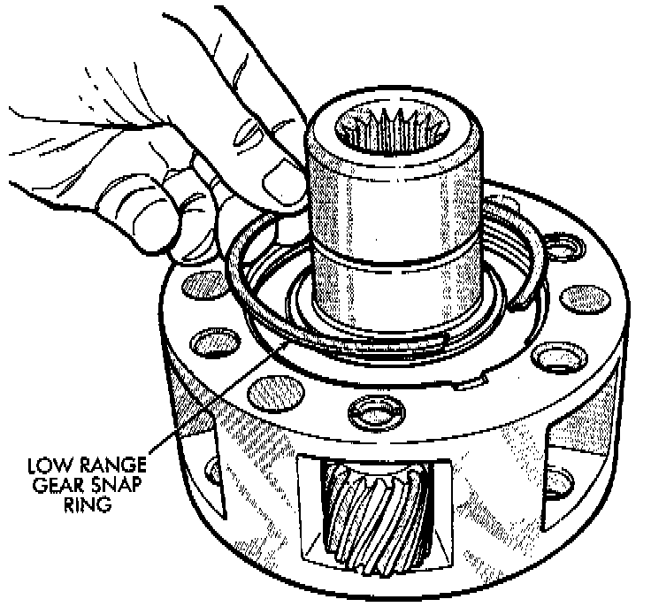
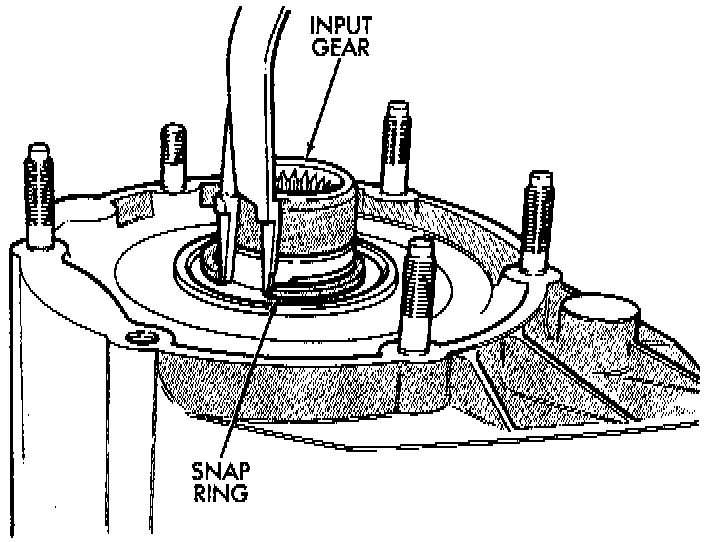
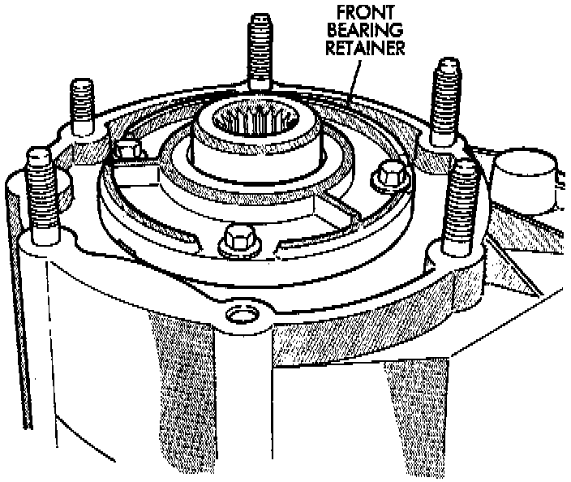

Input Gear/Low Range Assembly

1. Assemble low range gear, input gear thrust washers, input gear and input gear retainer.

2. Install low range gear snap ring.
3. Lubricate input gear and low range gears with automatic transmission fluid.
4. Start input gear shaft into front case bearing.
5. Press input gear shaft into front bearing.

6. Install new input gear snap ring.
7. Apply 3 mm (1/8 inch) wide bead of MOPAR gasket maker or silicone adhesive sealer to seal surface of front bearing retainer.

8. Install front bearing retainer. Tighten retainer bolts to 16 ft. lbs. (21 Nm) torque.